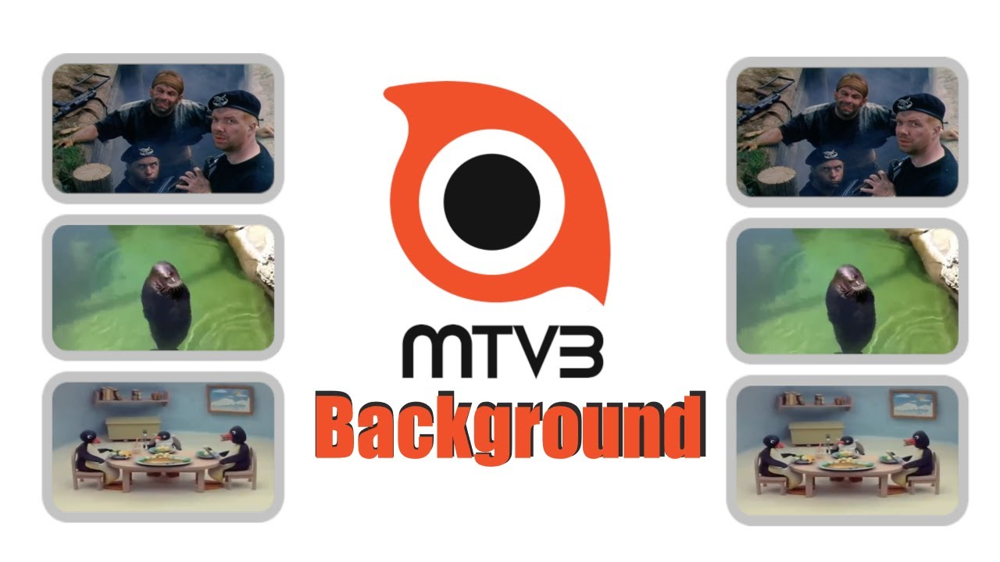

Tervetuloa!
Olet vieraillut sivullani jo 0 kertaa! Legendaarista!
Tervetuloa portfoliooni!
Täältä löydät kaikkea kivaa minuun liittyen! Tutustu sivuihini ja katso, mitä olen tehnyt.
Tutustu sivuihini
Pääset tutustumaan minuun tarkemmin tai ottamaan minuun yhteyttä alla olevista napeista.
Projektini
Tämä on yhden video projektini pikkukuva.
Voit katsoa ja löytää lisää niitä Tietoa Minusta sivulta!
